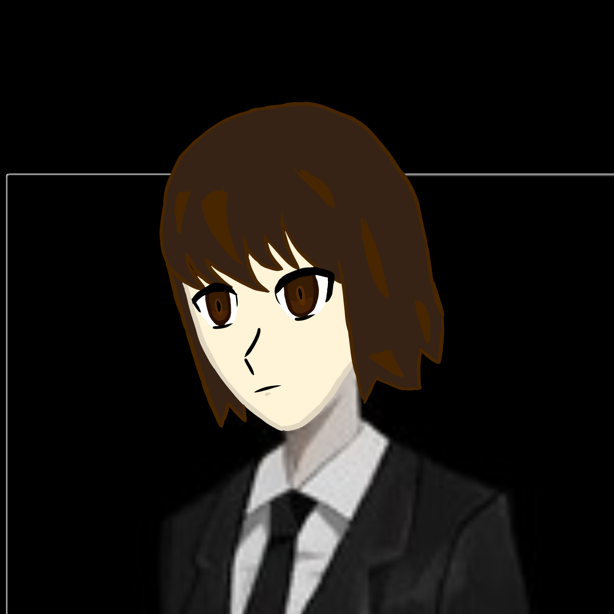

ОРУЖИЕ
Глефа из железа
Ближний бой
1–3урона

ПЕРСОНАЖ · ИМЕНИ ПОКА НЕТ
Глефа · Пол: мужской
После первой игры
Подключаемся…
Мастер и владелец персонажа могут редактировать карточку. Аккаунт создаёт мастер. Если нужна помощь со входом, обратись к нему.
Без бонусов к ХП.
Бонусов от предметов нет.
ОРУЖИЕ
Ближний бой
Урон и свойства оружия определяет мастер.
Введи бонусы 0, +1, +2 или другие значения от мастера. Характеристики пересчитываются; владения и способности автоматически не меняются. Список инвентаря ведётся отдельно.
Древковое оружие1 уровень
Глефа1 уровень
Уклонение2 уровень
Жестокость2 уровень
Медитация2 уровень
Уклонение — пассивный навык: мастер учитывает его уровень при попадании противника. Медитация позволяет развивать навыки; успех и повышение определяет мастер. Эффект жестокости уточняет мастер.
Критический и оглушающий удары пока не изучены.
Бешаба — богиня неудачи. Вера: 2.
Сейчас бонусов за поклонение нет.
монет
После первой игры: 386 монет. Дальнейшие изменения учитывай кнопками.
Инвентарь пуст.
Список вещей не меняет характеристики и надетое снаряжение автоматически.
Подключаемся к общему сохранению. Для редактирования войди в аккаунт.